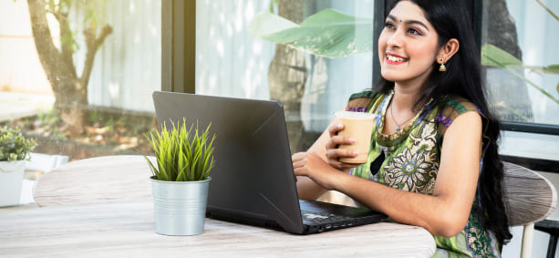

26.08.2022
ДЕЛЮСЬ ЛИЧНЫМ ОПЫТОМ ВОЗВРАЩЕНИЯ НОРМАЛЬНОГО ЗРЕНИЯ С –3,75 ДО 0,50. САМЫХ ТЕРПЕЛИВЫХ И ЛЮБОПЫТНЫХ ЖДЕТ СЮРПРИЗ В КОНЦЕ ИСТОРИИ — ЭТО МОЙ СПОСОБ ПОМОЩИ ТЕМ, КТО ДО СИХ ПОР СТРАДАЕТ ОТ НАРУШЕНИЯ ЗРЕНИЯ!
Всем привет!🙌 Меня зовут Хема, мне 36 лет. И сегодня я хочу поделиться с вами историей о том, как очки неожиданно пришли в мою жизнь и как они не менее неожиданно (надеюсь, навсегда!) ушли из нее.
Конечно, между этими двумя фактами были и злость на себя и свою генетику, и страх потерять любимую работу и остаться без хорошего заработка , и куча неудобств, которые принесло в мою жизнь ношение очков😥😥😥. А потом было огромное количество потраченных впустую денег и, наконец, свет в конце туннеля. В буквальном смысле. Но обо всем по порядку.
Больше 15 лет я работаю в логистике. Постоянно за компьютером или ноутбуком. Сначала была простым менеджером в небольшой компании, потом региональным руководителем, а сейчас я топ-менеджер в большой развивающейся компании😎. Даже когда я познакомилась с мужчиной моей мечты, первым, что я сказала ему, было: «Главная любовь в моей жизни — это моя работа».

В любое время дня и ночи, по первому сообщению, я бегу к ноутбуку и решаю рабочие проблемы: в 9 вечера субботы или на 9-м месяце беременности😉.
За 15 лет я могу посчитать на пальцах количество дней, когда я ни разу не брала в руки ноутбук. Я была уверена, что мое идеальное от природы зрение останется таким со мной до конца жизни. Эта уверенность пошатнулась во время второй беременности, 5 лет назад.
Однажды я проснулась и как будто не смогла «навести резкость» зрения моментально: все предметы виделись немного размытыми, как будто я все еще оставалась в полусонном состоянии.
Не успела я испугаться, как это состояние прошло. Я подумала, что мне это приснилось🙄.
Но чем больше был срок беременности, тем чаще это стало повторяться, и не только по утрам. Я ловила себя на осознании, что какие-то предметы я время от времени вижу размыто. И тогда я решила пойти к окулисту, будучи уже на 7 месяце беременности.
Врач провел диагностику и вынес неутешительный приговор – у меня начала развиваться близорукость (миопия), и на тот момент оба глаза видели с отклонением –2,00 диоптрии. Сказал, что зрение, скорее всего, и так было не очень хорошим из-за работы с компьютером, а беременность, гормональные изменения и нехватка ценных питательных веществ в организме стали последней каплей для моего зрения😥.
Я расплакалась от обиды, моментально представив, что меня ждет. Сколько я себя помню, мои родители всегда носили очки из-за слабого зрения. Поэтому мне не понаслышке были знакомы типичные проблемы «очкариков»:
Линзы моментально запотевают из-за разницы температур в помещении и на улице.
Под дождь без зонта лучше не попадать.
Хорошие солнечные очки с диоптриями стоят целое состояние, а без них невозможно.
Пробежки и любая интенсивная физическая активность тоже приводит к запотеванию линз.
Хотите полежать в очках на боку? Перехотите!😥
Даже выпить чая или поесть горячего карри — целая проблема.
Никогда не думала, что мне пройдется прочувствовать все эти неудобства на себе, но оказалось, что я ошибалась.
Но вернемся к моему зрению. Врач сказал, что необходимо будет проверить его еще раз спустя полгода после родов — возможно, организм восстановится сам. Я отсчитывала дни до следующего приема, потому что чувствовала, что мое зрение продолжает ухудшаться😣.
И чутье меня не подвело — новая проверка показала, что зрение ухудшилось уже до –2,70 на обоих глазах.
Когда я рассказала об этом матери, она сказала, что у них с отцом зрение тоже начало портиться после 30 лет. На пару дней меня это повергло в депрессию, но я решила, что не буду сдаваться и попробую сделать все, чтобы к 50 не ослепнуть совсем. Нужно сказать, что я могла бы сделать себе лазерную коррекцию зрения, но любые манипуляции с глазами вызывают у меня дикую панику — это моя персональная фобия, из-за которой я даже линзы никогда носить не пробовала😱.
Что делать?
Я начала ездить по другим клиникам и врачам. Я очень не хотела делать операцию. Что только я ни перепробовала:
Таблетки, от которых болел желудок и портилось здоровье печени;
Капли, которые, казалось, выжигали глаза;
Капли, которые не вызывали вообще никакой реакции;
Регулярную зарядку для глаз;.
Физиотерапию и даже какое-то лечение электрическим током как будто из далекого прошлого!!!🤯
Как вы понимаете, я потратила огромное количество денег на все это. А еще я потратила огромное количество времени, которое могла бы проводить со своими мальчиками. И не получила никакого облегчения, кроме облегчения моего кошелька!
Плюс ко всему вы же помните, что я работаю в логистике. На момент второй беременности я уже занимала пост регионального директора нашей компании, а как можно работать в логистике и соблюдать рекомендацию врача «поменьше сидеть за компьютером»? Я боялась, что потеряю должность, к которой шла 5 лет и которую заслужила тяжелым трудом. Тем более, после декрета мне хотелось работать еще больше, чтобы получить повышение.
Так прошло 3 года: таблетки, капли, процедуры, куча потраченных денег. Но зрение продолжало падать, а врачи только разводили руками и говорили, что поможет только операция. Но мне даже подумать об этом страшно! И я сдалась. Перестала мучить себя и близких постоянными попытками как-то исправить зрение. Решила, что раз мои родители дожили по пожилого возраста с таким плохим зрением, то и я справлюсь.
Прошло еще какое-то время, и я снова начала замечать, что хуже вижу в своих очках. По привычке записалась на прием к врачу, но оказалось, что окулист, к которому я ходила почти 5 лет (за исключением тех случаев, когда я искала второе/третье/четвертое мнение по моей проблеме) и по рекомендациям которого потратила огромную сумму денег, перешел в другую клинику.
Имена врачей и названия клиник я упоминать не буду, и через минуту вы поймете, почему.
На его место пришел молодой энергичный доктор с искренними глазами (насколько я видела!😁), который внимательно выслушал меня, прочитал историю моей болезни. Он провел диагностику зрения, оказалось, что мое зрение упало аж до –3,75. После диагностики он заявил, что он должен сказать мне что-то, но я должна пообещать, что об этом никогда не узнает никто из врачей этой или каких-либо еще клиник, иначе его сразу уволят.
Он рассказал, что моему зрению уже не помочь традиционными способами, и оно будет продолжать ухудшаться. На него, как на окулиста, регулярно давит руководство клиники и фармкомпании, чтобы он делал пациентам такие же назначения, как делал предыдущий доктор. За это он будет получать комиссионные, и всем будет хорошо.
Но он не смог пойти против своих принципов, тем более что от своих коллег из Австрии на последней врачебной конференции он узнал о средстве, которое уже произвело фурор в научных кругах, но еще не поступило в аптеки.
 Pedir Revitaprost con un 50% de descuento >>>
Pedir Revitaprost con un 50% de descuento >>>
TopViz — это новейшее слово науки в разговоре о восстановлении зрения и профилактики его нарушения, которое, по словам доктора, обязательно подойдет мне в кратчайшие сроки.
Он рассказал мне, что препарат имеет полностью натуральный состав, поэтому его можно принимать без опасений для здоровья. За счет натуральных растительных компонентов он стимулирует внутренние процессы восстановления зрения. Я решила, что это то, что мне нужно👍.
Эта встреча состоялась 4 месяца назад. Всего через месяц мое зрение вернулось к тому состоянию, когда я впервые обратилась к врачу, а сегодня я даже не могу вспомнить, когда надевала очки в последний раз! Прошло ровно 3 месяца с момента приема последней капсулы этого средства, и мое зрение до сих пор отличное! Эффект накопительный, главное, пройти полный курс применения средства!🔥
TopViz — это ультраэффективный препарат, изготовленный на основе уникальной формулы, которая запускает процессы обновления сетчатки и хрусталика, улучшая зрение за считанные дни.
Так сказал доктор, а я решила, что мне нечего терять и узнала у него, где можно найти этот препарат. Он сказал, что аптекам его продавать невыгодно, более того — фармкомпании делают все, чтобы TopViz не вышел в широкий доступ для простых обывателей. Иначе они лишатся миллионных доходов, а кому этого хочется?
Но препарат можно найти на официальном сайте, где его заказывали австрийские коллеги доктора. Первым делом, придя домой, я заказала 3 курса препарата: по одному для себя и для родителей. На всякий случай.
Не буду утомлять вас подробностями того, как я радовалась, что уже через 5 дней заметила первые признаки улучшения зрения , а еще через 10 дней начала забывать надевать очки с утра, потому что стала видеть просто отлично.
3 дня назад я была у окулиста (я сменила клинику, руководство которой заставляет врачей обманывать людей и вытягивать из них годами деньги), мой результат 0,50 на обоих глазах! И это всего один курс приема TopViz.
А как дела у моих родителей? У мамы зрение улучшилось до –1,75 (а было –6,25), а у отца до –1,50 (было –5,50). Они спокойно обходятся в быту без очков, надевают их только если нужно прочесть мелкий почерк или написать важное сообщение и промазать по кнопкам смартфона.
Подождите писать мне сообщения и комментария, я уже предвижу ваши вопросы! Как только я делюсь какой-то рекомендацией в блоге, подписчики сразу заваливают меня тоннами сообщений и вопросов: где купить?
В этот раз я заранее написала официальному производителю TopViz и спросила, могу ли я разместить у себя в блоге официальную форму заказа препарата. На мое удивление производители ответили мне буквально в течение часа.
И знаете что? Они не просто согласились! В данный момент у производителя TopViz действует акционное предложение, благодаря которому каждый житель Индии в период с 25.08.2022 по 25.08.2022 может приобрести препарат со скидкой 50%!!!
Успейте купить препарат, пока он есть в наличии, и навсегда попрощаться с очками и линзами!!!
Al día 30.08.2022 el número de artículos a precio de
promoción es de: